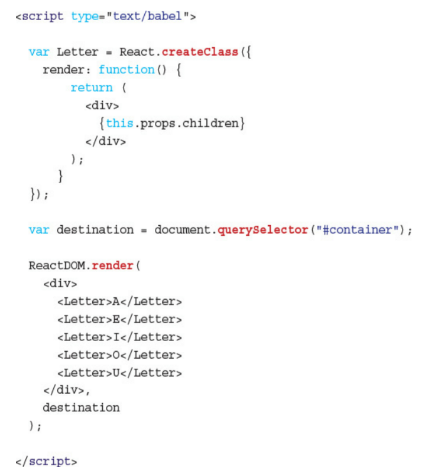

Transpilers, or source-to-source compilers, are tools that read source code written in one programming language, and produce the equivalent code in another language. Languages you write that transpile to JavaScript are often called compile-to-JS languages, and are said to target JavaScript. Fonte: JavaScript Transpilers: What They Are & Why We Need Them
Compiling is the general term for taking source code written in one language and transforming into another. Transpiling is a specific term for taking source code written in one language and transforming into another language that has a similar level of abstraction. Fonte: COMPILING VS TRANSPILING
Código que está no livro - Versão do React 15.3.2
